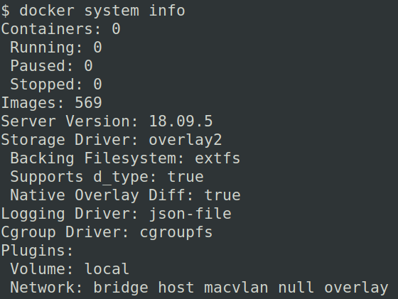
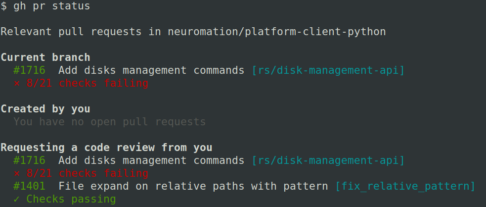
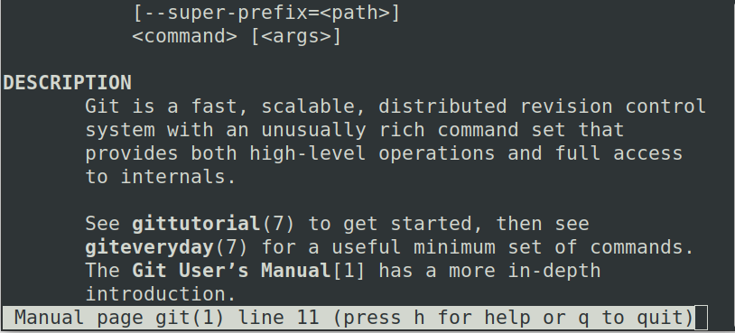
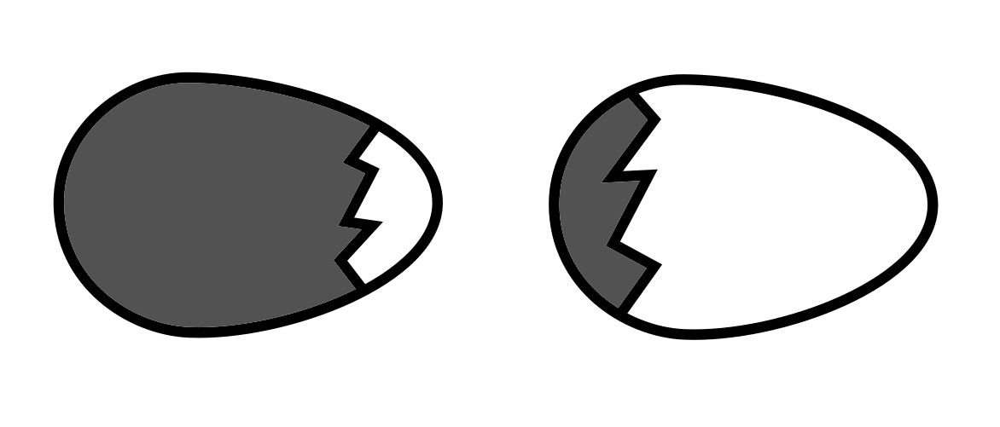
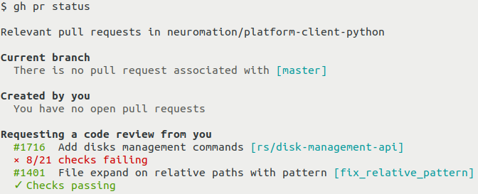
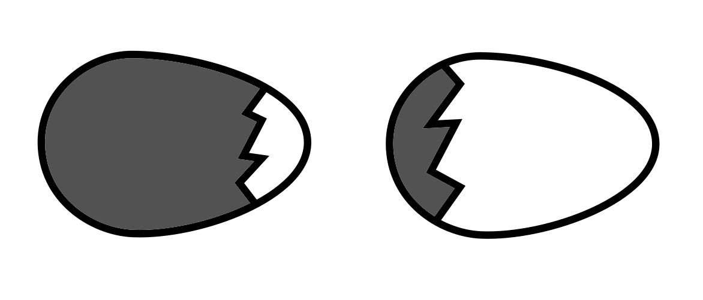
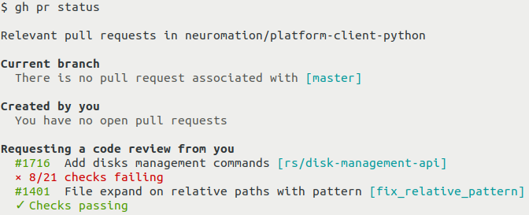

Делаем консольную программу удобной
Био
- 20+ лет с Python
- CPython Core developer
- asyncio
- со-автор aiohttp, yarl, multidict и т.д
Проблемы
или
Что может пойти не так?

Информативность


Размер шрифта и экрана

Scrolling & Pager
Светлый/тёмный цвет фона
 



Цвета и стили
- normal
- green
- red
- yellow
- blue
- cyan
- magenta
- bold
- dim (gray)
- underline
TERM=xterm-256colorCOLORTERM=truecolorENV VARS
как у взрослых ls
LSCOLORS=exfxcxdxbxegedabagacadLS_COLORS=no=00:di=01;34:ln=00;36:
*.jpg=01;35:*.mp3=00;32:*.tgz=00;31:
Смайлики
√×🤗→ □
Shell
- sh
- bash
- zsh
- fish
- cmd.exe
- powershell
TTY навсегда?
script.py | grep abcscript.py > out.txt
Windows, любовь моя
less→ more\n→ \r\ndim / grayANSI(по умолчанию)◢◣◤◥→ -\|/